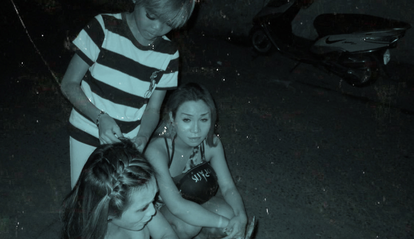
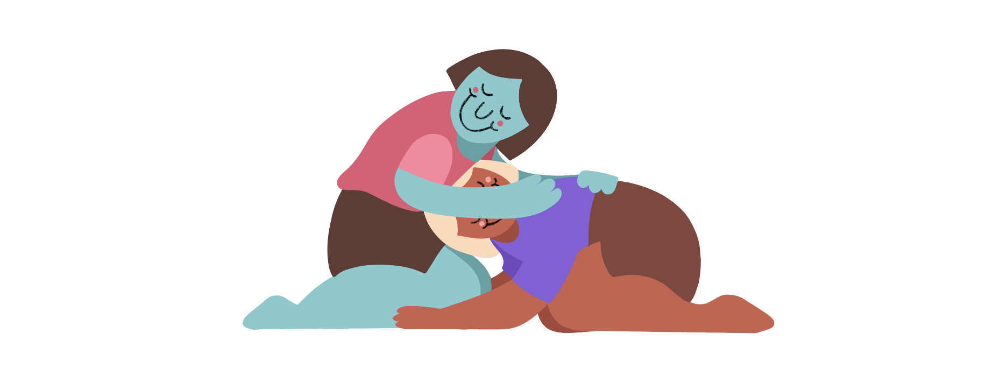

Gia Đình
Chương 02
Vượt qua thái độ gay gắt của gia đình vẫn là một trong những trở ngại lớn nhất đối với cộng đồng LBGTQ tại Việt Nam. Phần lớn, những gia đình tại Việt Nam vẫn có quan niệm rằng những mối quan hệ tình cảm và hôn nhân nên chỉ giữa nam và nữ. Vì thế, chương 02 sẽ nhấn mạnh vào các giá trị gia đình và truyền thống. Ngoài gia đình, chương 02 sẽ nói về hôn nhân, luật pháp, và khái niệm "gia đình tự chọn".
Mục Lục
Click để đi đến chủ đề
Gia Đình
"Bố mẹ không phải là không chấp nhận được con mình đồng tính, mà nhiều khi là không chấp nhận được mình thất bại trong việc đáp ứng kỳ vọng của xã hội với tư cách là một người bố mẹ.”
— Lương Thế Huy
Giám đốc đấu tranh quyền LGBTQ (iSEE)
Bố Mẹ
Parents
Đối với những gia đình Châu Á, sự gần gũi và hạnh phúc với những người trong gia đình luôn được đặt lên hàng đầu. Thế nhưng, thật không may là một số người LGBTQ tại Việt Nam phải lựa chọn giữa sự yêu thương của gia đình hoặc được sống thật với bản thân mình.
Khi sinh con ra, bố mẹ nào chẳng muốn những điều tốt nhất cho con mình. Thế nhưng, tình yêu của bố mẹ cũng là con dao 2 lưỡi. Họ muốn con mình học thật giỏi, cưới một người tuyệt vời, và sinh ra những đứa cháu đáng yêu. Vì bố mẹ đã có những kế hoạch tương lai từ khi sinh con ra, khi đứa con đó công khai mình là người đồng tính/chuyển giới, họ sẽ cảm thấy hụt hững khi phải chấp nhận giấc mơ này sẽ không thành hiên thực. Nhiều khi, bố mẹ không phải thất vọng vì con mình là người đồng tính, mà họ thất vọng là vì họ không muốn nghĩ mình thất bại trong vai trò làm bố mẹ khi con mình không đi theo khuôn mẫu của xã hội.
Một trong những lý dó khác mà bố mẹ không muốn con mình là người đồng tính là vì cả bố mẹ và con cái đều là nạn nhân của sự kỳ thị. Vì con mình là người đồng tính, họ sợ rằng cả gia đình đều phải đối mặt với định kiến và soi mói của xã hội. Để giữ thể diện cho gia đình, bố mẹ tìm mọi cách để biến con mình từ người đồng tính thành dị tính, đơn giản là vì họ nghĩ đây là những điều cần thiết phải làm để giúp con mình. Đánh đập, la mắng, cắt đứt mối quan hệ, thậm chí tìm đến bác sĩ để điều trị, là một trong những số cách họ tìm đến. Những điều bố mẹ làm là đều muốn tốt cho con cái, nhưng họ không nhận ra rằng những hành động cố gắng để thay đồi con mình đều phản tác dụng. Thay vì giúp con mình, bố mẹ ép buộc con mình phải thay đổi cử chỉ, ngoại hình, đều làm tổn thương cho cả hai bên.
Nhưng hãy nhớ, vào cuối ngày, bố mẹ rất yêu thương con cái.
Những người LGBTQ không nên cảm thấy buồn và tuyệt vọng khi bố mẹ la mắng, vì đó có nghĩa là bạn đã chấp nhận đầu hàng để bố mẹ làm nạn nhận của định kiến xã hội. Bạn nên hiểu rằng thế hệ trước lớn lên trong một thập niên không có Internet và thông tin về cộng đồng LGBTQ. Những kiến thức đầu tiên họ tiếp cận về cộng đồng LGBTQ đều là từ phim ảnh miêu tả những khía cạnh tiêu cực và thiếu chính xác (ví dụ: đồng tính là bệnh, đồng tính sẽ lây HIV/AIDS). Vì thế, hãy sử dụng lời nói để giúp bố mẹ hiểu hơn về mình và cộng đồng LGBTQ.
Gia Đình Tự Chọn
Chosen Family
Đặc biệt trong những ngày lễ lớn như Tết hoặc Giáng Sinh, ai ai cũng muốn sum vầy cùng bên gia đình. Rất tiếc, không phải ai cũng có sự may mắn để dành thời gian này cùng với gia đình của họ. Từ việc bị gia đình từ chối hoặc đuổi đi hoàn toàn, cho đến việc bị kỳ thị do chính họ hàng thân thiết, đây là một số thực tế mà nhiều người LGBTQ phải đối mặt. Vì thế, mỗi người LGBTQ đều nên có cho mình một gia đình tự chọn. "Gia đình tự chọn" là một khái niệm khá mới với cộng đồng LGBTQ, trong tiếng Anh còn gọi là "chosen family". Gia đình tự chọn là một nhóm người mà bạn xem như là gia đình, không nhất thiết phải sinh ra cùng một mái nhà. Mặc dù đây là một khái niệm khá mới, "gia đình tự chọn" này đã trở thành nền tảng cho nhiều người LGBTQ để có được sự ủng hộ, tình yêu, và sự khẳng định mà họ thiếu mất từ gia đình huyết thống.
Cho dù gia đình huyết thống có chấp nhận hoặc ủng hộ giới tính của bạn, họ vẫn sẽ không thể hiểu hoàn toàn những trải nghiệm thực sự của một người LGBTQ. Vì thế, có được một nhóm người hiểu những trải nghiệm bạn phải đối mặt rất quan trọng. Những người có cùng trải nghiệm cho bạn một sự xác nhận rằng bạn không phải là người duy nhất có những cảm xúc, thắc mắc, buồn tủi khi phải đối mặt với xã hội với tư cách là một người LGBTQ.
Gia đình tự chọn có lẽ là khái niệm quan trọng nhất cho trẻ em LGBTQ đường phố. Nghiên cứu của Tổ Chức Cứu Trợ Trẻ Em Việt Nam (Save the Children Vietnam) cho thấy trẻ em LGBTQ bỏ nhà ra đi do sự ruồng bỏ của gia đình, hoặc do áp lực tâm lý từ việc thiếu tình cảm và hổ trợ từ người thân. Vì thế, một gia đình tự chọn có thể giúp những người thiếu thốn tình cảm và vật chất vượt qua những khó khăn này. Tại Việt Nam, có rất nhiều trường hợp gia đình ép con mình ra khỏi nhà khi họ công khai là người chuyển giới. Các bạn chuyển giới phải vào đời sớm và trưởng thành trước tuổi. Vì rất khó khăn để xin việc làm ổn định, những người chuyển giới có cùng hoàng cảnh thường hay lập một gia đình tự chọn hoặc nhóm biểu diễn để mưu sinh.
"Trong ảnh, Bóng Mén, 14 tuổi, đang làm tóc cho hai chị em Trúc Lam — Trúc Linh (cũng là người chuyển giới) trước khi diễn tại một đám ma ở Đầm Sen. Em biết tự làm tóc và có thể làm tóc cho người khác. Em có năng khiếu trong việc trang điểm và hay xin đi cùng với các nhóm hát chuyển giới để phụ việc và làm tóc, có khi em còn được trả tiền công." - Cát Thy
Công Khai
Chiến Lược
Strategy
Quyết định công khai xu hướng tính dục/giới tính của bản thân là một trong những cột mốc lớn nhất đối với người LBGTQ. Vì Internet và mạng xã hội như Facebook hoặc Instagram, việc người khác biết mình là LGBTQ là điều sớm hay muộn. Vì thế, bạn nên chuẩn bị tinh khi bị đặt vào trường hợp phải công khai. Đặc biệt với gia đình, dù là chủ động hay bị động, đây sẽ là những giây phút dài và đầy cảm xúc khi phải công khai với bố mẹ, người thân. Dưới đây là những chiến lược nên cân nhắc khi bạn quyết định công khai với gia đình:
Cảm thông
Khi công khai, bạn nên hiểu rằng đây có thể là lần đầu tiên họ nói về chủ đề liên quan đến giới tính và xu hướng tính dục. Bố mẹ lớn lên trong một thập niên không có internet và thông tin về cộng đồng LGBTQ, những kiến thức đầu tiên họ biết về cộng đồng LGBTQ đều là từ phim ảnh miêu tả những khía cạnh xấu và sai lầm (ví dụ: đồng tính là bệnh, đồng tính sẽ lay HIV/AIDS). Trong những giây phút chưa hiểu rõ vấn đề, bố mẹ sẽ phản đối và la mắng. Đây là phản xạ tự nhiên của bố mẹ khi nghĩ con mình làm điều gì họ nghĩ là xấu. Những người LGBTQ không nên cảm thấy buồn và tuyệt vọng khi bố mẹ la mắng, vì đó có nghĩa là bạn đã chấp nhận đầu hàng để bố mẹ làm nạn nhận của những định kiến xã hội. Thay vào đó hãy sử dụng lời nói để giúp bố mẹ hiểu hơn về mình nói riêng và cộng đồng LGBTQ nói chung.
Cảm xúc
Khi công khai với bố mẹ, hãy sử dụng những cảm xúc và trải nghiệm để họ hiểu thêm về mình. Kể cho họ biết sự cô đơn bạn phải trải qua, những cảm xúc bạn phải giấu, những thắc mắc không giám hỏi, những câu chuyện khi bạn bị người khác kỳ thị. Hãy đơn giản hoá những khái niệm về cộng đồng LBGTQ để cho bố mẹ dễ hiểu hơn. Ví dụ như nhiều người sinh ra thuận tay trái, thì cũng sẽ có nhiều người sinh ra đồng tính. Đây không phải là sự lựa chọn hay bị ảnh hưởng từ môi trường. Đổ lỗi cho người đồng tính cho xu hướng tính dục của họ giống như là đổ lỗi cho những người sinh ra thuận tay trái chứ không thuận tay phải như số đông người khác.
Thông tin
Ngoài cảm xúc, hãy sử dụng những tin tức và nghiên cứu để thuyết phục bố mẹ. Bạn có thể tranh luận rằng Việt Nam càng ngày càng cởi mở với những người đồng tính và chuyển giới. Ví dụ trong năm 2014, nhà nước chính thức bỏ luật cấm kết hôn giữa người đống giới mà họ đưa ra từ năm 2000. Hoặc trong năm 2017, quyền chuyển giới chính thức được hớp pháp hoá. Đây là những bằng chứng cho thấy từ người dân cho đến nhà nước, mọi người càng ngày càng ủng hộ quyền dành cho người LGBTQ.
Kiên Trì
Đây là một cuộc hành trình dài, không thể nào xảy ra trong ngày một ngày hai. Nếu bố mẹ chưa hoàn toàn chấp nhận ngay lập tức, hãy cho bố mẹ thời gian để từ từ chấp nhận sự thật đó. Ngày qua ngày, sự chối bỏ sẽ trở thành sự chấp nhận. Nếu may mắn, sự chấp nhận đó sẽ trở thành sự ủng hộ. Trong khi chờ đợi sự chấp nhận từ bố mẹ, hãy cố gắng giữ tinh thần và sức khoẻ vững vàng để đi tiếp.
Dissonance (2019). Hoạ sĩ Matthieu Garcia Marin
vẽ lại sự khao khát và lo lắng trước khi công khai.
Hôn Nhân
Áp Lực
Pressure
Nói ngắn gọn: Người đồng tính lấy vợ/chồng để làm tròn chữ Hiếu sẽ là một trong những sai lầm lớn nhất trong cuộc đời.
Văn hoá và quan điểm truyền thống tại Việt Nam vẫn còn khá bảo thủ. Việc duy trì nối dõi tông đường là một trong điều rất quan trọng trong truyền thống của người Á Đông. “Có bạn gái chưa? Chừng nào lấy vợ? Chừng nào có con?” là những câu hỏi không thể tránh trong mỗi lần hội ngộ cùng gia đình và họ hàng. Thế nhưng, đây cũng là một trong những nỗi áp lực lớn nhất đối với những người LGBTQ tại Việt Nam.
Nhiều người LGBTQ cũng có suy nghĩ cưới người dị tính về để vừa lòng gia đình sẽ là đủ. Lương Thế Huy, giám đốc đấu tranh quyền LGBTQ (iSEE), có nói: “Những bố mẹ biết tôn trọng cuộc sống của con cái, thì lúc nào cũng có đủ sự tin tưởng để hài lòng với con dù nó thế nào. Còn những người vốn từ đầu không bao giờ hài lòng, tin tưởng thì sự thỏa mãn này chỉ là khởi đầu của một đòi hỏi khác.” Vì cưới xong, gia đình sẽ thúc giục bạn có con cái. Sau khi có con, niềm hạnh phúc làm cha/mẹ là thật, nhưng niềm hạnh phúc ấy sẽ không xua đi những cảm xúc thật bạn phải luôn kiềm nén. Điều này vừa làm khổ cho bản thân, vừa làm khổ cho người mình cưới.
"Nếu chỉ lấy một ai đó để tránh định kiến của xã hội, mối quan hệ đó sẽ không bền lâu vì nó không dựa trên tình cảm chân thật."
Nếu gia đình ép bạn kết hôn với người khác giới hoặc người bạn không thật sự yêu, bạn cần khẳng định rõ rằng bạn là người trưởng thành và có thể tự quyết định cho riêng mình. Về mặt pháp luật, bạn cũng có thể tranh luận rằng việc ép kết hôn hoặc kết hôn giả là vi phạm pháp luật và sẽ bị yêu cầu chấm dứt mối quan hệ (Luật Hôn Nhân và Gia Đình, Điều 05). Vì đây là quyết định lớn và sẽ anh hưởng đến cả cuộc đời bạn, bạn hãy khuyên gia đình nên tôn trọng sự quyết định của bạn.
Pháp Luật
Laws
Hôn Nhân
Hiện tại, pháp luật tại Việt Nam chưa thừa nhận hôn nhân giữa hai người cùng giới. Những cặp đôi đồng tính tại Việt Nam không được pháp luật bảo vệ. Việc hai người chung sống không đăng ký được xem như quan hệ dân sự giữa hai người bất kỳ nào trong xã hội. Tài sản có thể coi là tài sản chung nếu cả hai người cùng đứng tên trên giấy tờ, và việc chấm dứt sự chung sống sẽ được giải quyết theo luật dân sự chứ không theo luật hôn nhân.
Dù thế, nghi thức như lễ cưới hoặc đám hỏi giữa hai người đồng tính không vi phạm pháp luật. Nhà nước Việt Nam không xem những nghi thức này có giá trị pháp lý như đăng kí kết hôn. Một cặp đôi đồng tính có thể tổ chức lễ cưới mà không vi phạm pháp luật và không bị nhà nước can thiệp. Trong trường hợp bị yêu cầu dừng lại, cặp đôi có thể giải thích rằng đây không phải là “lễ kết hôn” mà là “tổ chức đám tiệc”.
Luật Hôn Nhân và Gia Đình 2014. Điều 08: Điều kiện kết hôn quy định:
- Nam, nữ kết hôn với nhau phải tuân theo các điều kiện sau đây:
a) Nam từ 20 tuổi trở lên, nữ từ đủ 18 tuổi trở lên
b) Việc kết hôn do nam và nữ tự nguyện quyết định
c) Không bị mất năng lực hành vi dân sự
d) Việc kết hôn không thuộc một trong các trường hợp cấm kết hôn theo quy định tại các điểm a, b, c và d khoản 2 Điều 5 của Luật này. - Nhà nước không thừa nhận hôn nhân giữa những người cùng giới tính.
Con Cái
Tại Việt Nam, có một số cách mà những người/cặp đôi đồng tính có thể có con và được pháp luật thừa nhận. Những người đồng tính nữ hoặc chuyển giới nữ-sang-nam có thể xin tinh trùng và thụ tinh nhân tạo. Những cặp đôi đồng tính có quyền nhận con nuôi với tư cách là một người độc thân. Vì pháp luật Việt Nam chưa công nhận cặp đôi đồng tính, chỉ có một người trong cặp đôi đó sẽ được công nhận là bố hoặc mẹ nuôi của đứa trẻ.
Hiện tại, Việt Nam chỉ cho những cặp vợ chồng không có khả năng sinh con nhờ người mang thai hộ. Người mang thai phải là người họ hàng gần với cặp vợ chồng. Người đồng tính không thể nhờ người mang thai hộ với tư cách là một người độc thân.
Đọc thêm về các thắc mắc về pháp luật của hôn nhân/gia đình của người đồng tính tại đây.
Câu Chuyện
"Giờ chỉ có để cho nó sống đúng với con người của nó, thì sau này cô chú có chết mới nhắm mắt được."
— Cô T.
Chồng cô T. quê ở tỉnh Thái Bình, nơi việc duy trì nối dõi tông đường là rất quan trọng. Vì thế, cả gia đình đã vô cùng vui mừng khi cô sinh đứa con đầu lòng là một bé trai. Vào năm thứ hai đại học, con trai cô T. thú nhận với gia đình rằng anh là một người đồng tính, từ lúc đó trở đi, vợ chồng cô T. bắt đầu đối xử khác biệt với con. “Ngày trước thương con bao nhiêu, bây giờ cô lại càng giận, càng ghét bỏ, thậm chí càng kinh tởm nó bấy nhiêu. Ở ngoài xã hội người ta bảo đồng tính là đồi trụy, cô cũng nghĩ người đồng tính là những đứa chẳng ra gì.”– cô T. chia sẻ. Cô T. và chồng không còn quan tâm đến đứa con trai đầu lòng của mình nữa. “Ngày nó tốt nghiệp, nó có mời cô chú đến tham dự, nhưng vợ chồng cô chẳng buồn đi.”
Bao năm qua, vợ chồng cô T. đã cố gắng hết sức để “chữa trị”căn bệnh đồng tính của con trai. Họ đưa con đi hết bệnh viện này đến bệnh viện kia, làm đủ kiểu xét nghiệm máu và thậm chí còn tiêm cả hoóc-môn cho con. “Nghe người ta mách rằng có thể con trai cô bị một vong nữ nhập, cô chú đã đưa nó đến gặp thầy pháp ở tận miền Tây. Người ta dùng phép đâm vào chỗ kín của nó trong khi tra hỏi danh tính cái vong, vậy mà nó vẫn cứ trả lời “Con là D.”. Họ trói nó vào ghế và tiếp tục đâm, còn nó thì gào thét "Đau quá! Đau quá! Con đồng tính, con thích con trai!". Lúc đó vợ chồng cô hoang mang lắm, biết rằng nếu cứ tiếp tục thế này thì nó sẽ chết mất.”– Cô T. kể.
"Đau quá! Đau quá! Con đồng tính, con thích con trai!"
Dù phải chịu nhiều đau khổ, con trai cô T. vẫn rất ngoan và nghe lời bố mẹ. Giờ đây nghĩ lại, cô T. biết rằng con trai cô đã phải chịu đựng rất nhiều. Hồi học cấp III, cậu đã từng phải nhập viện vì thần kinh không ổn định (lúc đó, gia đình vẫn chưa biết về giới tính của con). Lần thứ hai cậu nhập viện là do làm việc quá căng thẳng. Trong thời gian học cao học, cậu đã phải làm thêm nhiều công việc để kiếm tiền trang trải học phí vì gia đình đã cắt mọi khoản trợ cấp sau khi cậu công khai về giới tính thật của mình.
“Cô còn dại dột đến nỗi nhờ bác sỹ cho nó ở lại khu bệnh nữ thay vì khu nam. Một đêm, khi cô đang ngồi với nó, bỗng dưng nó đứng vụt dậy lẩm bẩm đếm. “Nếu con đếm từ một đến sáu thì H. (người yêu của nó) sẽ đến với con. Chúng con đã hứa với nhau như vậy. "Nó nói, rồi gục ngã xuống sàn." Sau nhiều lần như vậy, họ nhận ra con trai mình đang phải chịu đựng nỗi đau gấp trăm ngàn lần mình. Từ đó, họ đã suy nghĩ lại và bắt đầu yêu thương chăm sóc con hơn để bù đắp cho quãng thời gian trước đây.
"Giờ con trai cô đã được 30 tuổi rồi, nó đang làm việc tận bên Phillipines. Tâm lý của nó đã ổn định hơn, nhưng khi công việc căng thẳng thì lại trở bệnh. Cô chú cũng không thể sống mãi với nó, khi cô chú mất đi rồi biết ai sẽ chăm sóc cho nó đây? Giờ chỉ có để cho nó sống đúng với con người của nó, thì sau này cô chú có chết mới nhắm mắt được."– cô T. bộc bạch.
ISEE phỏng vấn câu chuyện của 30 người chuyển giới tại Hà Nội và Sài Gòn